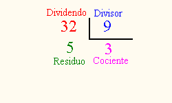

La división es la operación inversa de la multiplicación. Cuando se nos da el resultado de multiplicar dos números (factores) entre sí como también uno de los factores, el objeto de la división es hallar el segundo factor.
Ejemplo ilustrativo:
Si se tiene que el producto de dos números es 72 y uno de los números es 8, ¿por cuánto se multiplicó el 8 para que el resultado fuera 72? La respuesta se encuentra, dividiendo 72 entre 8, y el resultado es 9.
Partes de la división
Dividendo: es el número que se va dividir. Divisor: es el número que divide a otro. Cociente: resultado de una división. Residuo: es el número que sobra cuando se divide un número entre otro.
En la definición anterior dada sobre la división, se tiene que: el producto dado es el dividendo, el factor dado es el divisor, y el factor encontrado es el cociente.

Se dice que una división es exacta cuando el residuo es cero y que es inexacta cuando el residuo es diferente de 0.
Es bueno hacer notar que el residuo siempre tiene que ser menor que el divisor.
Es indispensable conocer al dedillo las tablas de multiplicar; pués para aprender a dividir es indispensable saber multiplicar (si no sabes las tablas ve a estudiarlas hasta que te las sepas de memoria)
Procedimiento
Se separan en el dividendo, mediante una coma en la parte superior (apóstrofo), tantas cifras de la izquierda como las que tiene el divisor o una cifra más (el número formado por las cifras separadas debe ser mayor que el divisor)
Si el número formado en la separación tiene tantas cifras como el divisor, se observa cuántas veces está la primera cifra del divisor en la primera cifra del número formado
Si el número formado en la separación tiene una cifra más que el divisor, se observa cuántas veces está la primera cifra del divisor en el número formado por las dos primeras cifras del número formado en la separación
El número hallado en el paso 2 o en el 3 se escribe en el cociente (dicho número debe ser una cifra entre 1 y 9)
Se multiplica el número escrito en el cociente por el divisor y el resultado se resta del número separado en el dividendo. Si la resta se puede efectuar, esto es, si el producto es menor que el número formado en la separación, entonces el número escrito en el cociente es correcto y se deja allí; en cambio, si el producto es mayor que el número formado en la separación, la resta no se puede efectuar y el número escrito en el cociente no es correcto; y se debe ir disminuyendo de uno en uno hasta que el producto del número por el divisor sea menor que el número formado en la separación.
Se baja la siguiente cifra del dividendo, escribiéndose a la derecha de la diferencia hallada en el paso anterior
Si el número formado en el paso anterior es mayor o igual que el divisor, se procede como en los pasos 2 a 5. Si el número formado es menor, se escribe cero en el cociente y se procede a bajar la próxima cifra del dividendo ... si el que se forma es mayor o igual que el divisor ...
El proceso termina cuando se haya bajado la última cifra del dividendo